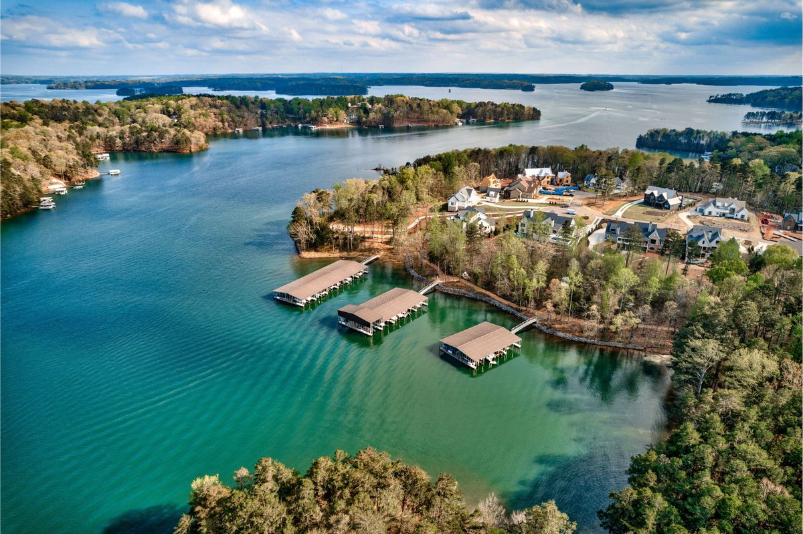
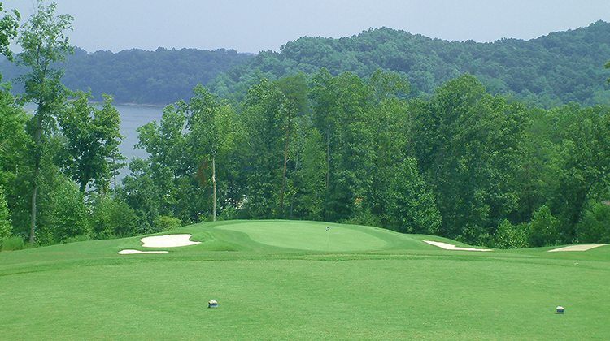
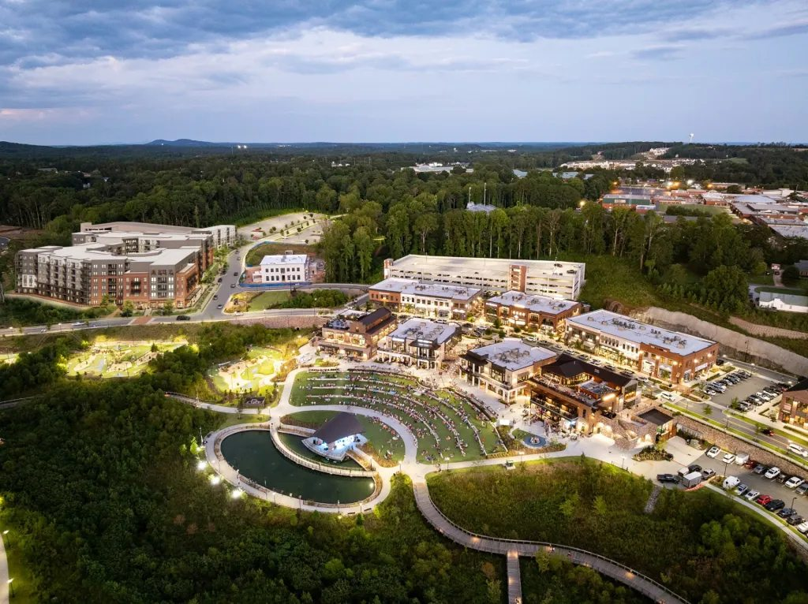
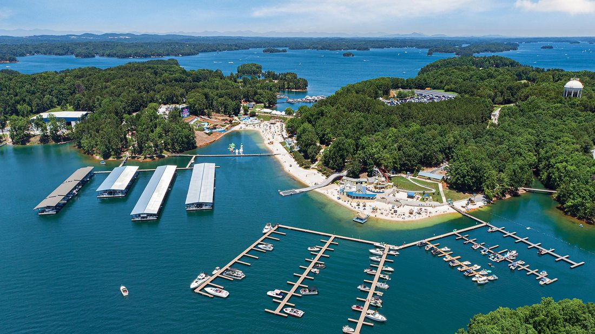
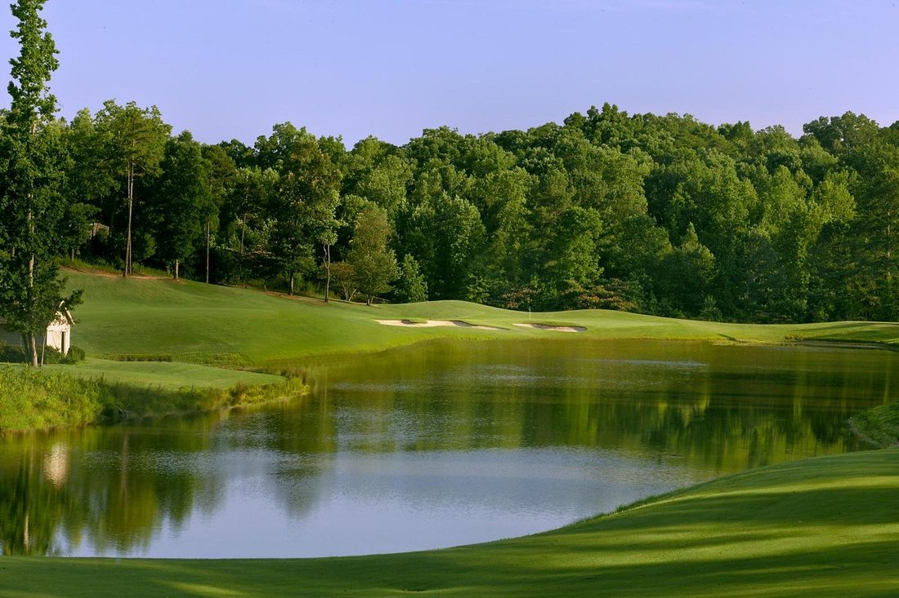
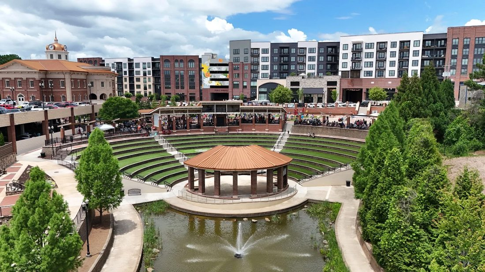

Lake Lanier, County by County
From deep-water coves on the south end to the quiet shoreline up north, we know Lanier neighborhood by neighborhood, and we will help you find the part of the lake that fits how you want to live.
One Lake, Many Front Porches
Team Giarraffa lives and works on Lake Lanier, so we know each community by its docks, its water depth, its amenities, and its everyday feel. Explore the neighborhoods below, then jump into live homes for sale by county.
Lake Communities We Know By Heart





Search Lanier By County
Lake Lanier spans five counties, each with its own shoreline, pace, and price points. Pick a county to see active homes for sale.

Forsyth County Lake Lanier Homes View Homes →
Hall County Lake Lanier Homes View Homes →
Dawson County Lake Lanier Homes View Homes →
Gwinnett County Lake Lanier Homes View Homes → Lumpkin County photo pending Lumpkin County Lake Lanier Homes View Homes →Plan Your Next Move on Lanier
Search Lake Homes
Browse every active waterfront and lake-access listing across the five Lanier counties.
What's My Home Worth
Get a data-backed estimate of your lake home's current market value.
Lake Lanier Resource Guide
Marinas, waterfront dining, parks, and boat ramps, mapped for life on the lake.
Buyer's Guide
Understand docks, water depth, coves, and slips before you tour your first lake home.
Not Sure Which Community Fits You?
Tell us how you want to live on Lanier, the boating, the schools, the amenities, the budget, and Louis and Rhonda will point you to the right shoreline.